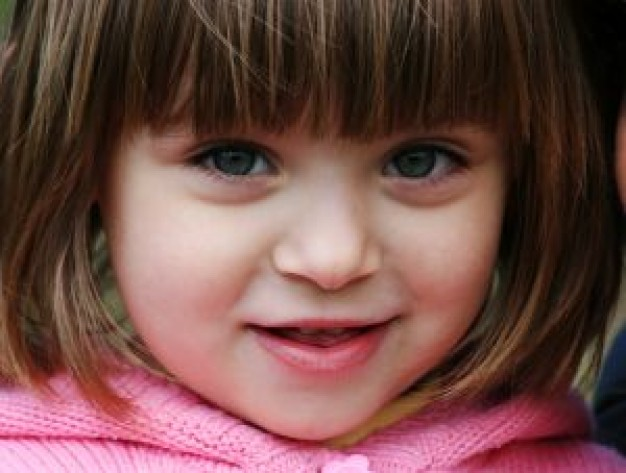
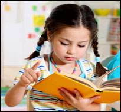

Отзывы благодарных родителей

Даня
Большое спасибо Марине за ее доброе отношение, упорный труд и любовь, которые она вложила в нашего Даню. Мы довольны! Мариана

Юля
Мы не знали, что с нашим ребенком. Юля совсем не говорила, когда ей было уже 3 года. Мы были в панике и метались в поисках специалиста. После консультации с Мариной все встало на свои места. Мы получили направление по работе над речью дочки. Занимаемся 2 раза в неделю у логопеда в оффисе и почти каждый день дома сами. Сейчас Юле уже больше 4-х , она читает небольшие стихи, знает , как выделять звуки, делает упражнения с языком, имеет неплохой словарный запас. Занятия с Мариной Юля очень любит. Спасибо большое. Наташа и Дима Т.
